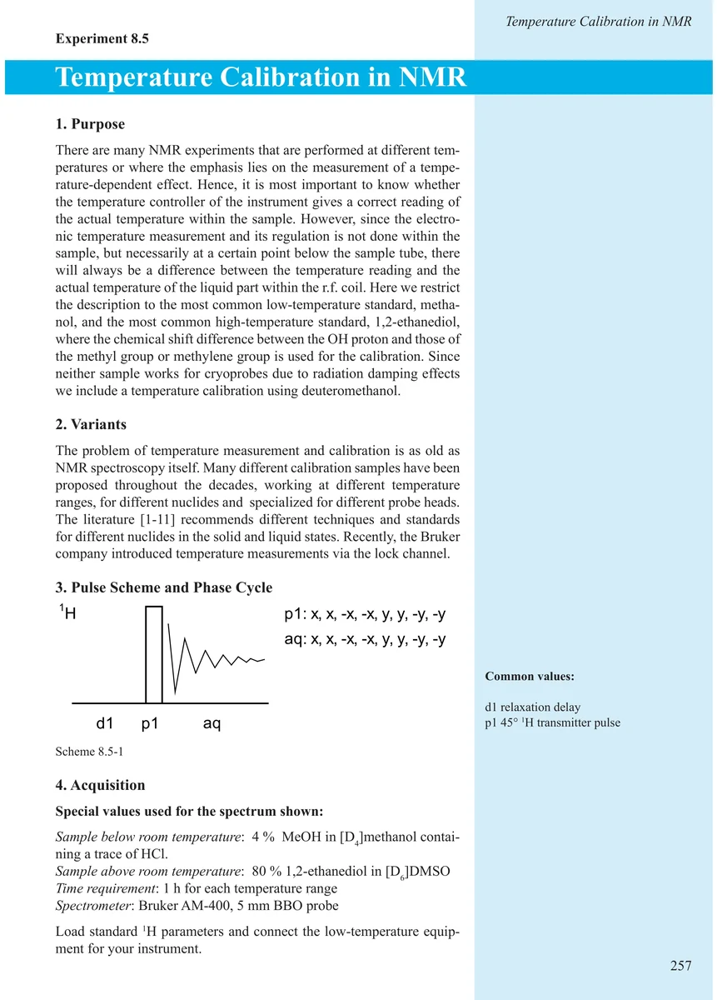
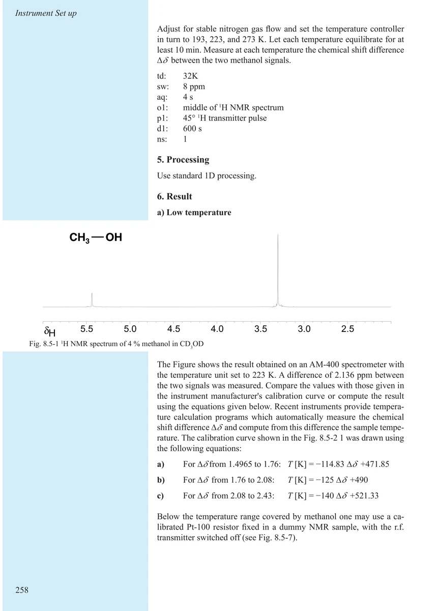
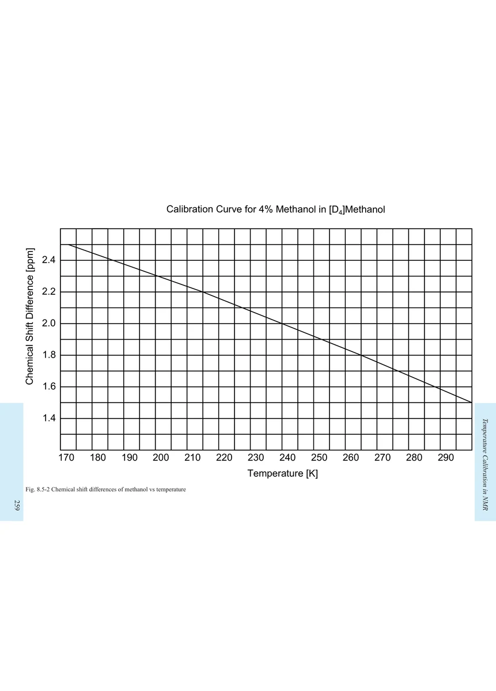
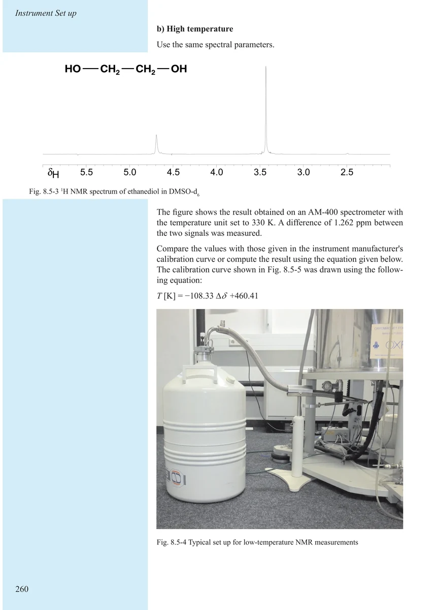
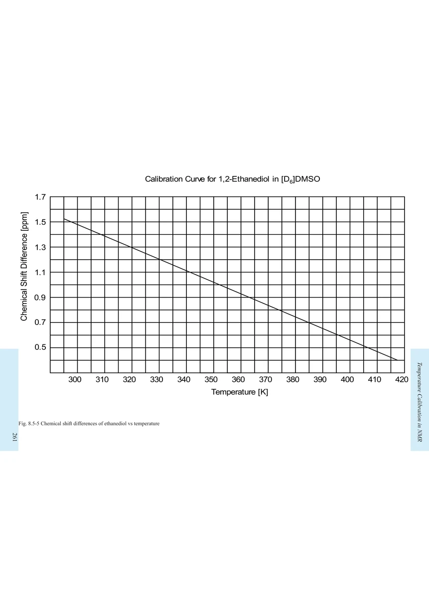
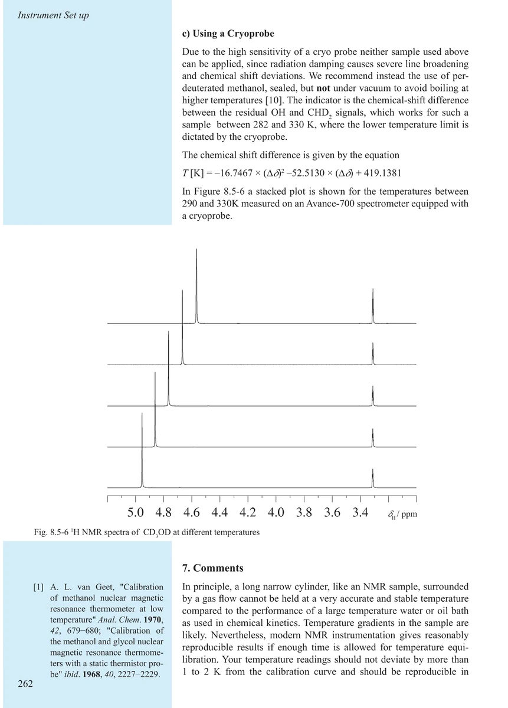
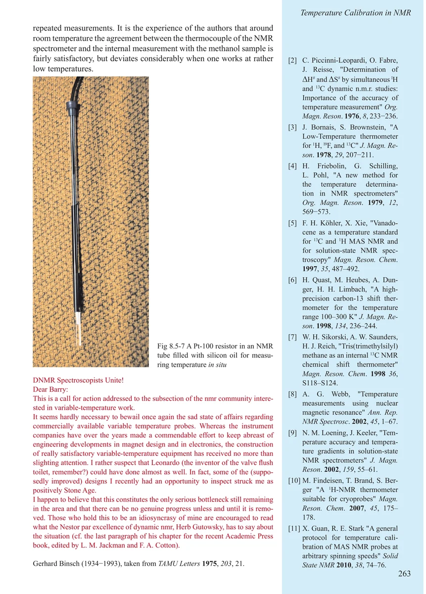
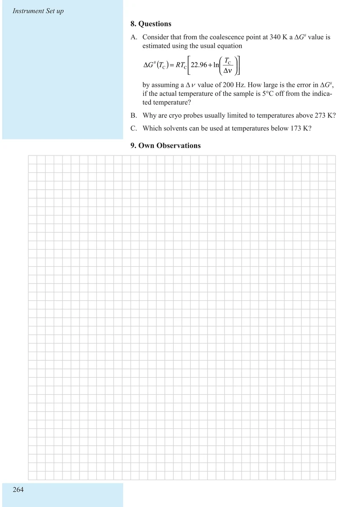

Item 8.5
Temperature Calibration in NMR
NMR 温度校准
PDF 267–274 · 原书 257–264 · Maintenance and Calibration








核磁共振实验方法、脉冲序列与谱图实践
Item 8.5
NMR 温度校准
PDF 267–274 · 原书 257–264 · Maintenance and Calibration







